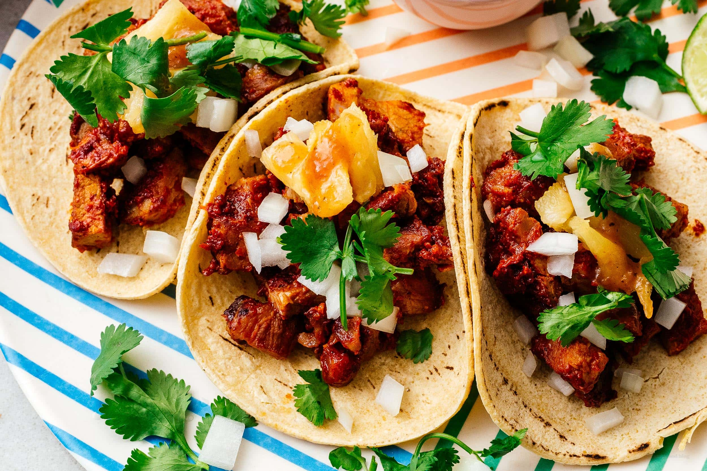

TACOS AL PASTOR

Tacos al Pastor are a popular Mexican street food made with thinly sliced
pork marinated in a blend of spices, chilies, and pineapple. The meat is
traditionally cooked on a vertical spit, then served in warm corn tortillas
with onions, cilantro, and fresh pineapple.
Ingredients:
- 2 lbs (900 g) pork shoulder, thinly sliced
- 3 dried guajillo chilies, seeded
- 2 cloves garlic
- 1/2 cup pineapple juice
- 2 tbsp white vinegar
- 1 tsp paprika
- 1 tsp ground cumin
- 1 tsp oregano
- 1 tsp salt
- 1/2 pineapple, sliced
- 12 corn tortillas
- 1/2 cup diced onion
- 1/2 cup chopped cilantro
- Lime wedges for serving
Steps to follow:
- Soak the dried chilies in hot water for 10 minutes.
- Blend the chilies, garlic, pineapple juice, vinegar, paprika, cumin, oregano, and salt into a smooth marinade.
- Coat the pork with the marinade and refrigerate for at least 4 hours or overnight.
- Cook the pork in a hot skillet or grill until browned and cooked through.
- Grill the pineapple slices until lightly caramelized.
- Chop the cooked pork and pineapple into small pieces.
- Warm the corn tortillas.
- Fill each tortilla with pork and pineapple.
- Top with diced onion and chopped cilantro.
- Serve with lime wedges.
← Back to Recipes